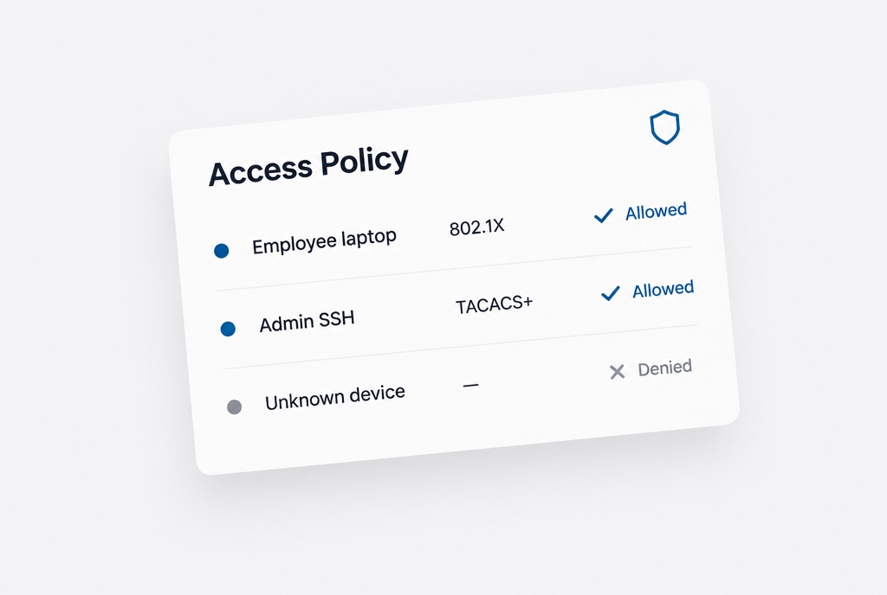
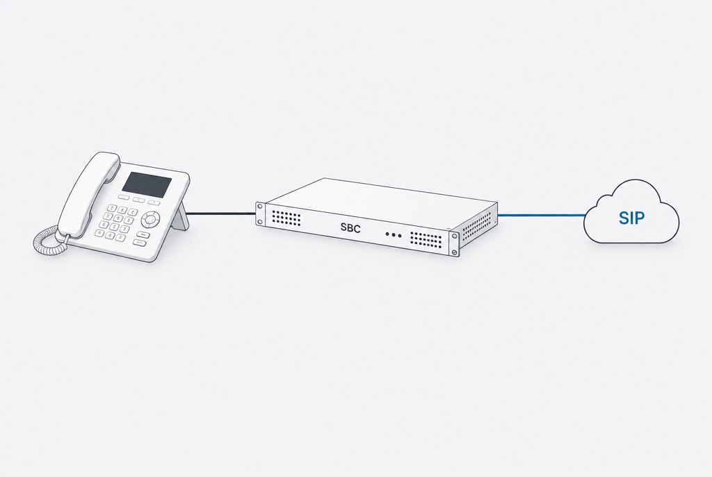

Capabilities.
What I deliver, and the tools I use to do it.
Eight areas where I can take a problem from discovery to a finished, documented system. Each one lists the work I have actually delivered and the technologies behind it.

What I deliver
- Discovery with site POCs and government stakeholders across a 100+ site enterprise, turning operational requirements into VLAN, firewall, and identity designs
- Situation reports and briefings for DLA leadership after the 2026 infrastructure projects in Hawaii and Japan, covering execution, risk, and follow-on actions
- Business cases that win budget, like the one that won GitHub Enterprise licensing for my team
- Change implementation plans and cutover runbooks presented to government leadership for approval
- Site surveys and discovery sessions with customers, followed by topology designs and change requests
Tools & technologies
Visio · Jira · ServiceNow · EVE-NG demo and POC environments · Microsoft Office

What I deliver
- STIG compliance reporting automated with PowerShell across 100+ CKL files, cutting manual audit time
- A GitHub Enterprise configuration review repository, now the anchor of the DevSecOps initiative
- Ansible automation workflows through OpenText Network Automation, validated against live LAN infrastructure
- A Jira + ServiceNow integration to unify the DevSecOps toolchain
Tools & technologies
Ansible · OpenText NA · Python · PowerShell · Git · GitHub Enterprise · Jira · ServiceNow · EVE-NG · GNS3

What I deliver
- The core backbone upgrade at DLA Pearl Harbor: every site circuit onto redundant 10 Gbps links in one overnight cutover, zero user impact
- Enterprise VLAN standardization across distributed DoD sites, with SOPs adopted as the team standard
- DMVPN hub-and-spoke designs connecting forward-deployed and CONUS sites
- Tier 3 DMVPN/IPSec troubleshooting on SatCom (StarShield) forward-deployed sites
- Tier 3 support across hundreds of locations
Tools & technologies
BGP · OSPF · EIGRP · STP/RSTP · Cisco Catalyst · Nexus · VLAN/802.1Q · VPC · LACP · MPLS · DMVPN · IPSec/IKEv2 · NHRP · mGRE

What I deliver
- Cisco ACI/APIC fabric administration: tenant provisioning, EPG/BD policy, contract management, and multi-pod troubleshooting
- VMware vSphere/vCenter environments: virtual switching, vMotion, and physical-to-virtual integration for mission-critical workloads
- VLAN migrations through ACI and APIC across remote sites
Tools & technologies
Cisco ACI · APIC · NDO · VMware vSphere · vCenter · Cisco UCS · Active Directory · DNS

What I deliver
- An ISE/TACACS+ migration that replaces RSA key-based SSH authentication, enabling centralized identity and downstream automation
- Cisco ISE 802.1x NAC across wired and wireless enterprise segments
- DISA STIG remediation across network devices
- Check Point and Cisco ASA rule base audits, NAT, and IPS tuning
Tools & technologies
Cisco ISE · 802.1x · TACACS+ · RADIUS · Cisco ASA · Firepower NGFW · Check Point R81 · DISA STIG · Zero Trust

What I deliver
- CUCM dial plan, call routing, and SIP trunk designs built from customer requirements
- Oracle Session Border Controllers for classified and unclassified deployments: codec negotiation, TLS/SRTP, CAC, geographic redundancy
- VoIP migrations and RightFax integrations with zero-downtime cutovers
Tools & technologies
Cisco CUCM · Oracle SBC (Acme Packet 3900/4600) · SIP · TLS/SRTP · QoS · CAC · RightFax

What I deliver
- Config delta analysis across NHRP registrations, IKEv2 SA states, SIP ALG, NAT, and QoS to resolve phone registration failures
- Packet-level analysis and documented root cause for recurring faults
Tools & technologies
nGenius · SolarWinds · Wireshark · ServiceNow · Visio

What I deliver
- A personal AI memory system on PostgreSQL with pgvector and a custom MCP server
- A modular multi-agent system for email triage, calendar management, and workflow automation
- Retrieval pipelines on pgvector and ChromaDB
Tools & technologies
Microsoft Azure · AWS · PostgreSQL · pgvector · Supabase · Voyage AI · ChromaDB · Python · MCP